Small. Fast. Reliable.
Choose any three.
Choose any three.
|
|
Syntax Diagrams For SQLite
sql-stmt-list:
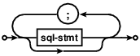
References: sql-stmt
See also: lang.html
sql-stmt:
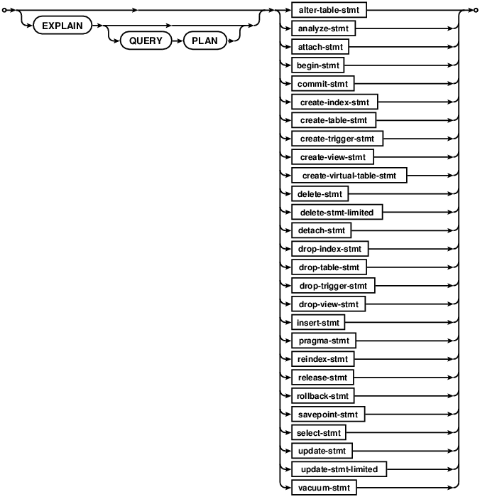
Used by: sql-stmt-list
References: alter-table-stmt analyze-stmt attach-stmt begin-stmt commit-stmt create-index-stmt create-table-stmt create-trigger-stmt create-view-stmt create-virtual-table-stmt delete-stmt delete-stmt-limited detach-stmt drop-index-stmt drop-table-stmt drop-trigger-stmt drop-view-stmt insert-stmt pragma-stmt reindex-stmt release-stmt rollback-stmt savepoint-stmt select-stmt update-stmt update-stmt-limited vacuum-stmt
See also: lang.html lang_explain.html
alter-table-stmt:
Used by: sql-stmt
References: column-def
See also: lang_altertable.html

analyze-stmt:
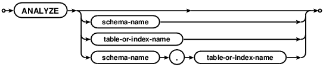
Used by: sql-stmt
See also: lang_analyze.html
attach-stmt:
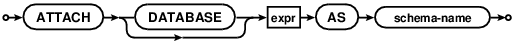
Used by: sql-stmt
References: expr
See also: lang_attach.html
begin-stmt:
Used by: sql-stmt
See also: lang_transaction.html

commit-stmt:
Used by: sql-stmt
See also: lang_transaction.html

rollback-stmt:
Used by: sql-stmt
See also: lang_savepoint.html lang_transaction.html

savepoint-stmt:
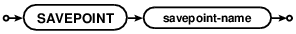
Used by: sql-stmt
See also: lang_savepoint.html
release-stmt:
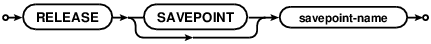
Used by: sql-stmt
See also: lang_savepoint.html
create-index-stmt:
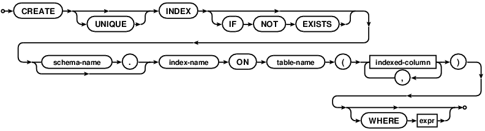
Used by: sql-stmt
References: expr indexed-column
See also: lang_createindex.html partialindex.html
indexed-column:
Used by: create-index-stmt table-constraint
References: expr
See also: lang_createindex.html lang_createtable.html lang_createtable.html#primkeyconst lang_createtable.html#uniqueconst partialindex.html

create-table-stmt:
Used by: sql-stmt
References: column-def select-stmt table-constraint
See also: lang_createtable.html

column-def:
Used by: alter-table-stmt create-table-stmt
References: column-constraint type-name
See also: lang_altertable.html lang_createtable.html lang_createtable.html#tablecoldef

type-name:
Used by: column-def expr
References: signed-number
See also: lang_altertable.html lang_attach.html lang_createindex.html lang_createtable.html lang_createtrigger.html lang_createview.html lang_delete.html lang_expr.html lang_insert.html lang_select.html lang_select.html#compound lang_select.html#simpleselect lang_update.html lang_with.html partialindex.html

column-constraint:
Used by: column-def
References: conflict-clause expr foreign-key-clause literal-value signed-number
See also: lang_altertable.html lang_createtable.html lang_createtable.html#tablecoldef

signed-number:
Used by: column-constraint pragma-value type-name
See also: lang_altertable.html lang_attach.html lang_createindex.html lang_createtable.html lang_createtrigger.html lang_createview.html lang_delete.html lang_expr.html lang_insert.html lang_select.html lang_select.html#compound lang_select.html#simpleselect lang_update.html lang_with.html partialindex.html pragma.html#syntax

table-constraint:
Used by: create-table-stmt
References: conflict-clause expr foreign-key-clause indexed-column
See also: lang_createtable.html lang_createtable.html#primkeyconst lang_createtable.html#tablecoldef lang_createtable.html#uniqueconst

foreign-key-clause:
Used by: column-constraint table-constraint
See also: lang_altertable.html lang_createtable.html

conflict-clause:
Used by: column-constraint table-constraint
See also: lang_altertable.html lang_conflict.html lang_createtable.html lang_createtable.html#notnullconst

create-trigger-stmt:
Used by: sql-stmt
References: delete-stmt expr insert-stmt select-stmt update-stmt
See also: lang_createtrigger.html

create-view-stmt:
Used by: sql-stmt
References: select-stmt
See also: lang_createview.html

create-virtual-table-stmt:
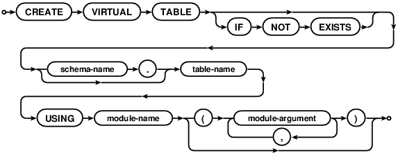
Used by: sql-stmt
See also: lang_createvtab.html
with-clause:
Used by: delete-stmt delete-stmt-limited insert-stmt update-stmt update-stmt-limited
References: cte-table-name select-stmt
See also: lang_createtrigger.html lang_delete.html lang_insert.html lang_update.html lang_with.html

cte-table-name:
Used by: recursive-cte with-clause
See also: lang_createtrigger.html lang_delete.html lang_insert.html lang_update.html lang_with.html lang_with.html#recursivecte

recursive-cte:
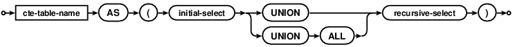
References: cte-table-name
See also: lang_with.html#recursivecte
common-table-expression:
Used by: compound-select-stmt factored-select-stmt select-stmt simple-select-stmt
References: select-stmt
See also: lang_altertable.html lang_attach.html lang_createindex.html lang_createtable.html lang_createtrigger.html lang_createview.html lang_delete.html lang_expr.html lang_insert.html lang_select.html lang_select.html#compound lang_select.html#simpleselect lang_update.html lang_with.html partialindex.html

delete-stmt:
Used by: create-trigger-stmt sql-stmt
References: expr qualified-table-name with-clause
See also: lang_createtrigger.html lang_delete.html

delete-stmt-limited:
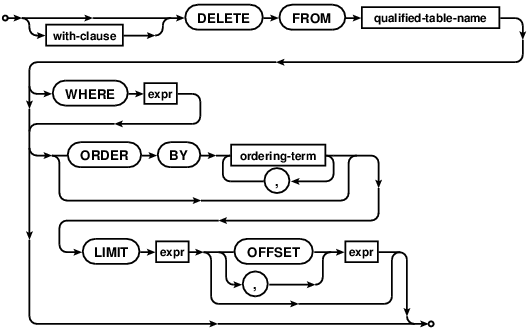
Used by: sql-stmt
References: expr ordering-term qualified-table-name with-clause
See also: lang_delete.html
detach-stmt:
Used by: sql-stmt
See also: lang_detach.html

drop-index-stmt:
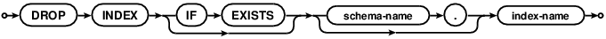
Used by: sql-stmt
See also: lang_dropindex.html
drop-table-stmt:
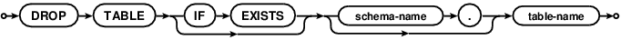
Used by: sql-stmt
See also: lang_droptable.html
drop-trigger-stmt:
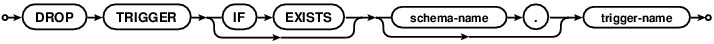
Used by: sql-stmt
See also: lang_droptrigger.html
drop-view-stmt:
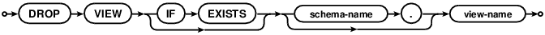
Used by: sql-stmt
See also: lang_dropview.html
expr:
Used by: attach-stmt column-constraint compound-select-stmt create-index-stmt create-trigger-stmt delete-stmt delete-stmt-limited factored-select-stmt indexed-column insert-stmt join-constraint ordering-term result-column select-core select-stmt simple-select-stmt table-constraint table-or-subquery update-stmt update-stmt-limited
References: literal-value raise-function select-stmt type-name
See also: lang_altertable.html lang_attach.html lang_createindex.html lang_createtable.html lang_createtrigger.html lang_createview.html lang_delete.html lang_expr.html lang_insert.html lang_select.html lang_select.html#compound lang_select.html#simpleselect lang_update.html lang_with.html partialindex.html

raise-function:
Used by: expr
See also: lang_altertable.html lang_attach.html lang_createindex.html lang_createtable.html lang_createtrigger.html lang_createtrigger.html#raise lang_createview.html lang_delete.html lang_expr.html lang_insert.html lang_select.html lang_select.html#compound lang_select.html#simpleselect lang_update.html lang_with.html partialindex.html

literal-value:
Used by: column-constraint expr
See also: lang_altertable.html lang_attach.html lang_createindex.html lang_createtable.html lang_createtrigger.html lang_createview.html lang_delete.html lang_expr.html lang_insert.html lang_select.html lang_select.html#compound lang_select.html#simpleselect lang_update.html lang_with.html partialindex.html

numeric-literal:
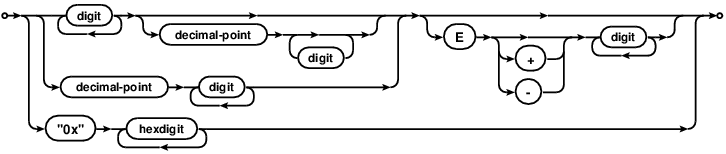
See also: lang_expr.html#litvalue
insert-stmt:
Used by: create-trigger-stmt sql-stmt
References: expr select-stmt with-clause
See also: lang_createtrigger.html lang_insert.html

pragma-stmt:
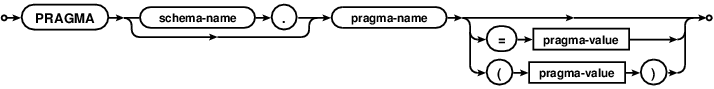
Used by: sql-stmt
References: pragma-value
See also: pragma.html#syntax
pragma-value:
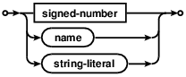
Used by: pragma-stmt
References: signed-number
See also: pragma.html#syntax
reindex-stmt:
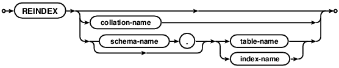
Used by: sql-stmt
See also: lang_reindex.html
select-stmt:
Used by: common-table-expression create-table-stmt create-trigger-stmt create-view-stmt expr insert-stmt sql-stmt table-or-subquery with-clause
References: common-table-expression compound-operator expr join-clause ordering-term result-column table-or-subquery
See also: lang_altertable.html lang_attach.html lang_createindex.html lang_createtable.html lang_createtrigger.html lang_createview.html lang_delete.html lang_expr.html lang_insert.html lang_select.html lang_select.html#compound lang_select.html#simpleselect lang_update.html lang_with.html lang_with.html#recursivecte partialindex.html

join-clause:
Used by: select-core select-stmt table-or-subquery
References: join-constraint join-operator table-or-subquery
See also: lang_altertable.html lang_attach.html lang_createindex.html lang_createtable.html lang_createtrigger.html lang_createview.html lang_delete.html lang_expr.html lang_insert.html lang_select.html lang_select.html#compound lang_select.html#simpleselect lang_update.html lang_with.html partialindex.html

select-core:
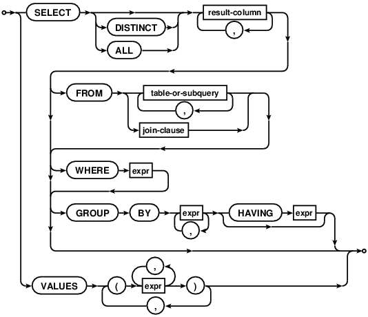
Used by: compound-select-stmt factored-select-stmt simple-select-stmt
References: expr join-clause result-column table-or-subquery
See also: lang_select.html lang_select.html#compound lang_select.html#simpleselect
factored-select-stmt:
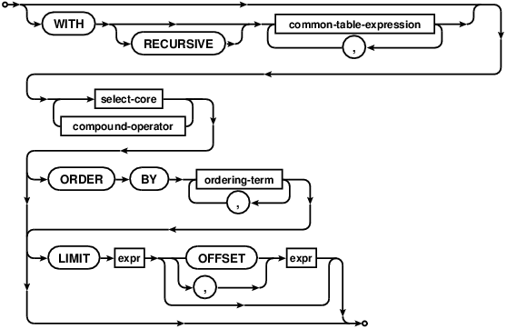
References: common-table-expression compound-operator expr ordering-term select-core
See also: lang_select.html
simple-select-stmt:
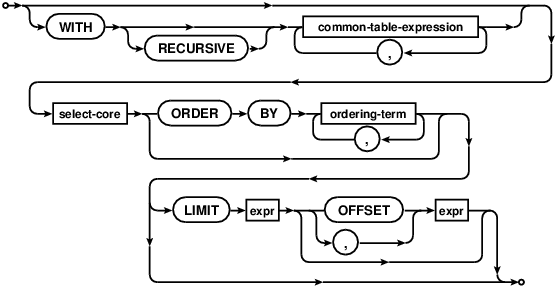
References: common-table-expression expr ordering-term select-core
See also: lang_select.html#simpleselect
compound-select-stmt:
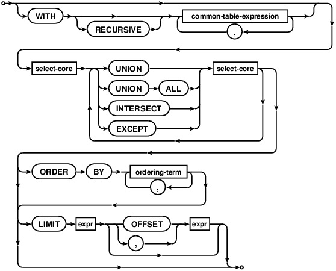
References: common-table-expression expr ordering-term select-core
See also: lang_select.html#compound
table-or-subquery:
Used by: join-clause select-core select-stmt
References: expr join-clause select-stmt
See also: lang_altertable.html lang_attach.html lang_createindex.html lang_createtable.html lang_createtrigger.html lang_createview.html lang_delete.html lang_expr.html lang_insert.html lang_select.html lang_select.html#compound lang_select.html#simpleselect lang_update.html lang_with.html partialindex.html

result-column:
Used by: select-core select-stmt
References: expr
See also: lang_altertable.html lang_attach.html lang_createindex.html lang_createtable.html lang_createtrigger.html lang_createview.html lang_delete.html lang_expr.html lang_insert.html lang_select.html lang_select.html#compound lang_select.html#simpleselect lang_update.html lang_with.html partialindex.html

join-operator:
Used by: join-clause
See also: lang_altertable.html lang_attach.html lang_createindex.html lang_createtable.html lang_createtrigger.html lang_createview.html lang_delete.html lang_expr.html lang_insert.html lang_select.html lang_select.html#compound lang_select.html#fromclause lang_select.html#simpleselect lang_update.html lang_with.html partialindex.html

join-constraint:
Used by: join-clause
References: expr
See also: lang_altertable.html lang_attach.html lang_createindex.html lang_createtable.html lang_createtrigger.html lang_createview.html lang_delete.html lang_expr.html lang_insert.html lang_select.html lang_select.html#compound lang_select.html#fromclause lang_select.html#simpleselect lang_update.html lang_with.html partialindex.html

ordering-term:
Used by: compound-select-stmt delete-stmt-limited factored-select-stmt select-stmt simple-select-stmt update-stmt-limited
References: expr
See also: lang_altertable.html lang_attach.html lang_createindex.html lang_createtable.html lang_createtrigger.html lang_createview.html lang_delete.html lang_expr.html lang_insert.html lang_select.html lang_select.html#compound lang_select.html#simpleselect lang_update.html lang_with.html partialindex.html

compound-operator:
Used by: factored-select-stmt select-stmt
See also: lang_altertable.html lang_attach.html lang_createindex.html lang_createtable.html lang_createtrigger.html lang_createview.html lang_delete.html lang_expr.html lang_insert.html lang_select.html lang_select.html#compound lang_select.html#simpleselect lang_update.html lang_with.html lang_with.html#recursivecte partialindex.html

update-stmt:
Used by: create-trigger-stmt sql-stmt
References: expr qualified-table-name with-clause
See also: lang_createtrigger.html lang_update.html

update-stmt-limited:
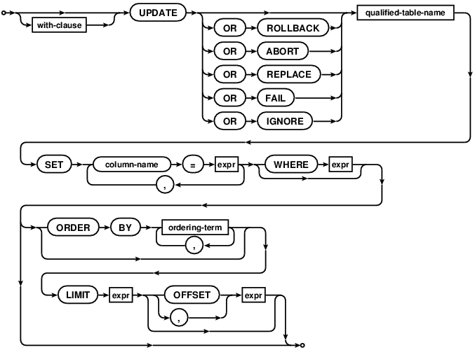
Used by: sql-stmt
References: expr ordering-term qualified-table-name with-clause
See also: lang_update.html
qualified-table-name:
Used by: delete-stmt delete-stmt-limited update-stmt update-stmt-limited
See also: lang_createtrigger.html lang_delete.html lang_indexedby.html lang_update.html

vacuum-stmt:
Used by: sql-stmt
See also: lang_vacuum.html

comment-syntax:
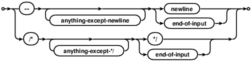
See also: lang_comment.html